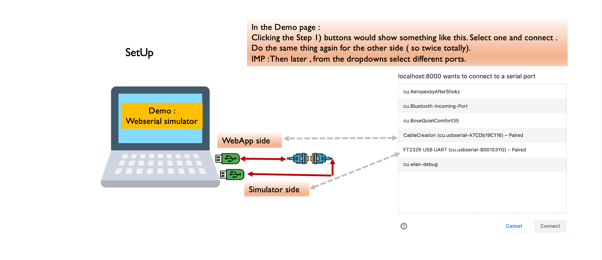

|  |
WebApp side |
Simulator side |
|
|
Step 4: Enter command to serial simulator |
Check: after sending simulator received bytes as a string | |
| Check: after sending webapp received bytes as a string |
Step 5: Enter simulator's response to webapp |
|